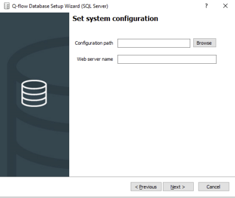
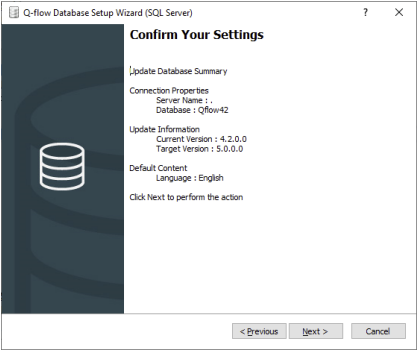

<!DOCTYPE html>
<html class="writer-html5" lang="es" >
<head>
  <meta charset="utf-8" /><meta name="viewport" content="width=device-width, initial-scale=1" />

  <meta name="viewport" content="width=device-width, initial-scale=1.0" />
  <title>v3.01-v4.3 &mdash; Qflow Cloud</title>
      <link rel="stylesheet" href="_static/pygments.css" type="text/css" />
      <link rel="stylesheet" href="_static/css/theme.css" type="text/css" />
      <link rel="stylesheet" href="_static/css/custom.css" type="text/css" />
    <link rel="canonical" href="https://qflowbpm.com/docs/qflowcloud/es/30.1-UpgradeGuide3_1_To_4_3.html"/>
  <!--[if lt IE 9]>
    <script src="_static/js/html5shiv.min.js"></script>
  <![endif]-->
  
        <script src="_static/jquery.js?v=5d32c60e"></script>
        <script src="_static/_sphinx_javascript_frameworks_compat.js?v=2cd50e6c"></script>
        <script src="_static/documentation_options.js?v=3ae3941c"></script>
        <script src="_static/doctools.js?v=9a2dae69"></script>
        <script src="_static/sphinx_highlight.js?v=dc90522c"></script>
        <script src="_static/translations.js?v=efdbd0b9"></script>
    <script src="_static/js/theme.js"></script>

  <link href="https://fonts.googleapis.com/css?family=Roboto:400,100,300,700" rel="stylesheet" type="text/css">
    <link rel="index" title="Índice" href="genindex.html" />
    <link rel="search" title="Búsqueda" href="search.html" /> 
</head>

<body class="wy-body-for-nav">

  <header>
    <nav class="navbar navbar-default navbar-shrink urudata-header no-print">
        <!-- Collect the nav links, forms, and other content for toggling-->
        <div class="options-menu">
            <ul class="nav navbar-nav navbar-right">
                <li class="option">
                    <a class="page-scroll" href="https://qflowbpm.com/es/">Qflow</a>
                </li>
                <li class="option">
                    <a class="page-scroll" href="https://forum.qflowbpm.com/">Foro</a>
                </li>
                <li class="option">
                  <a class="page-scroll" href="https://qflowbpm.com/es/centro-de-ayuda/">Centro de Ayuda</a>
                </li>
                <li class="option">
                    <a class="page-scroll" href="https://qflowbpm.com/es/contacto/">Contáctanos</a>
                </li>
            </ul>
        </div>
            <!-- /.navbar-collapse -->
        <!-- /.container-fluid -->
    </nav>
  </header> 
  <div class="wy-grid-for-nav">
    <nav data-toggle="wy-nav-shift" class="wy-nav-side">
      <div class="wy-side-scroll">
        <div class="wy-side-nav-search" >
            <a href="index.html" class="icon icon-home"> Qflow
          </a><div style="width: 100%;margin-bottom: 10px;">
    <div style="display: flex;">
        <div class="version-select">
            <div class="input-group">
              <select id="versionSelect" class="form-select" onchange="if (this.value) { redirectToSite(window.location.href.replace(new RegExp('/(qflowcloud|qflow5_1_1|qflow5_2|qflow5_5)/'), this.value)) }" style="margin-right: 6px; border-radius: 50px;">
                <option value="/qflowcloud/">Cloud (latest)</option>
                <option value="/qflow5_5/">5.5 OnPremise (latest)</option>
                <option value="/qflow5_2/">5.2 OnPremise</option>
                <option value="/qflow5_1_1/">5.1.1 OnPremise</option>
              </select>
            </div>
        </div>
        <div class="language-select">
          <div class="input-group">
            <select id="languageSelect" class="form-select" onchange="if (this.value) { redirectToSite(window.location.href.replace(new RegExp('/(en|es)/'), this.value)) }" style="border-radius: 50px;">
              <option value="/en/">English</option>
              <option value="/es/">Español</option>
            </select>
          </div>
      </div>
    </div>
  </div>

  <script>
    selectElement('versionSelect', getVersion());
    selectElement('languageSelect', getLanguage());

    function selectElement(id, valueToSelect) {    
        let element = document.getElementById(id);
        element.value = valueToSelect;
    }
    
    function getLanguage() {    
      if (window.location.href.includes('/es/')) 
      {
        return '/es/';
      }
      else {
        return '/en/';
      }
    }
    
    function getVersion() {    
      if (window.location.href.includes('/qflowcloud/')) 
      {
        return '/qflowcloud/';
      }
      else if (window.location.href.includes('/qflow5_1_1/')) 
      {
        return '/qflow5_1_1/';
      }
      else if (window.location.href.includes('/qflow5_2/')) 
      {
        return '/qflow5_2/';
      }
      else {
        return '/qflow5_5/';
      } 
    }

    function redirectToSite(url) {
        var http = new XMLHttpRequest();
        http.onreadystatechange = function() {
          if (http.readyState === 4) {
            if (http.status !== 404) {
              window.location.href = url;
            } else {
              window.location.href = url.replace(url.substr(url.lastIndexOf('/') + 1), 'index.html');
            }
          }
        }

        http.open('HEAD', url, true);
        http.send();        
    }
  </script>
<div role="search">
  <form id="rtd-search-form" class="wy-form" action="search.html" method="get">
    <input type="text" name="q" placeholder="Buscar documentos" aria-label="Buscar documentos" />
    <input type="hidden" name="check_keywords" value="yes" />
    <input type="hidden" name="area" value="default" />
  </form>
</div>
        </div><div class="wy-menu wy-menu-vertical" data-spy="affix" role="navigation" aria-label="Navigation menu">
              <p class="caption" role="heading"><span class="caption-text">Inicio</span></p>
<ul>
<li class="toctree-l1"><a class="reference internal" href="29-ReleaseNote.html">Novedades  <i class="fa fa-star showOnlyInMenu" style="color: orange"></i></a></li>
<li class="toctree-l1"><a class="reference internal" href="01-QflowIntroduction.html">Introducción a Qflow</a></li>
<li class="toctree-l1"><a class="reference internal" href="TutorialsIndex.html">Tutoriales</a></li>
<li class="toctree-l1"><a class="reference internal" href="04-QflowTask.html">Qflow Task</a></li>
<li class="toctree-l1"><a class="reference internal" href="15-QflowDesign.html">Qflow Design</a></li>
<li class="toctree-l1"><a class="reference internal" href="18-QflowTeam.html">Qflow Team</a></li>
<li class="toctree-l1"><a class="reference internal" href="19-QflowAdmin.html">Qflow Admin</a></li>
<li class="toctree-l1"><a class="reference internal" href="21-Q-pointsConsumption.html">Consumo de Q-points</a></li>
<li class="toctree-l1"><a class="reference internal" href="34-ConnectorsIndex.html">Conectores</a></li>
<li class="toctree-l1"><a class="reference internal" href="31-Development.html">Desarrolladores</a></li>
</ul>

        </div>
      </div>
    </nav>

    <section data-toggle="wy-nav-shift" class="wy-nav-content-wrap"><nav class="wy-nav-top" aria-label="Mobile navigation menu" >
          <i data-toggle="wy-nav-top" class="fa fa-bars"></i>
          <a href="index.html">Qflow</a>
      </nav>

      <div class="wy-nav-content">
        <div class="rst-content">
          <div role="navigation" aria-label="Page navigation">
  <ul class="wy-breadcrumbs">
      <li><a href="index.html" class="icon icon-home" aria-label="Home"></a></li>
      <li class="breadcrumb-item active">v3.01-v4.3</li>
      <li class="wy-breadcrumbs-aside">
      </li>
  </ul>
  <hr/>
</div>
          <div role="main" class="document" itemscope="itemscope" itemtype="http://schema.org/Article">
           <div itemprop="articleBody">
             
  <section id="v3-01-v4-3">
<h1>v3.01-v4.3<a class="headerlink" href="#v3-01-v4-3" title="Link to this heading"></a></h1>
<section id="parametros-de-sistema-y-propiedades-extendidas">
<h2>Parámetros de sistema y propiedades extendidas<a class="headerlink" href="#parametros-de-sistema-y-propiedades-extendidas" title="Link to this heading"></a></h2>
<p>Tanto los parámetros de sistema como las propiedades extendidas pasan a ser almacenados en la base
de datos.
El instalador de base de datos, al hacer un upgrade a 4.3, solicitará la ruta al archivo «system.config» (Configuration
path) y el nombre del servidor (Web server name) en donde están alojados los sitios, como lo muestra la
siguiente imagen:</p>
<blockquote>
<div><figure class="align-center" id="id7">
<a class="reference internal image-reference" href="_images/QflowDatabaseInstaller.png"></a>
<figcaption>
<p><span class="caption-text">Instalador de upgrade</span><a class="headerlink" href="#id7" title="Link to this image"></a></p>
</figcaption>
</figure>
</div></blockquote>
<p>Al hacer clic en “Next”, se mostrará un resumen de la información ingresada, similar a la siguiente imagen:</p>
<blockquote>
<div><figure class="align-center" id="id8">
<a class="reference internal image-reference" href="_images/QflowDatabaseInstallerSummary.png"></a>
<figcaption>
<p><span class="caption-text">Confirmar datos de instalación</span><a class="headerlink" href="#id8" title="Link to this image"></a></p>
</figcaption>
</figure>
</div></blockquote>
<p>Al confirmar la instalación, el instalador obtendrá las distintas propiedades extendidas y los parámetros
de sistema (excepto MaxDBConnectionRetries y QueryCommandTimeout, que seguirán siendo utilizados
desde el archivo). Luego, se insertarán en la base de datos con los valores correspondientes y se generará
un archivo llamado «newSystem.config» sin la información ya ingresada en la base de datos y que se recomienda sea el nuevo
«system.config» del sistema.</p>
<p>En adición, se agregarán los distintos sitios y servicios, teniendo como servidor el ingresado como Web
server name, en la tabla RegisteredService. Si se quiere realizar alguna modificación se deberá hacer desde
la base de datos. Para más información sobre dicha tabla, vea el manual <a class="reference external" href="13-DatabaseModel.html">Modelo de Base de Datos</a>.</p>
<p>Para corroborar que la importación de la configuración haya sido correcta, podrá hacerlo desde SAM Web,
luego de su instalación. Para más información  vea el manual <a class="reference external" href="19-QflowAdmin.html">Administración y monitoreo del sistema</a>.</p>
<p>Cabe destacar que, si bien las imágenes son del instalador de base de datos de SQL Server, para Oracle se
comporta de manera análoga.</p>
</section>
<section id="habilitar-configuracion-de-formularios-personalizados-del-sitio-webforms">
<h2>Habilitar configuración de formularios personalizados del sitio WebForms<a class="headerlink" href="#habilitar-configuracion-de-formularios-personalizados-del-sitio-webforms" title="Link to this heading"></a></h2>
<p>Si se quiere habilitar la creación de nuevos formularios personalizados de tipo WebForms, es necesario
agregar en el archivo «web.config» de BPM Web una configuración:</p>
<div class="highlight-xml notranslate"><div class="highlight"><pre><span></span><span class="nt">&lt;add</span><span class="w"> </span><span class="na">key=</span><span class="s">&quot;ShowWebFormsProperties&quot;</span><span class="w"> </span><span class="na">value=</span><span class="s">&quot;true&quot;</span><span class="w"> </span><span class="nt">/&gt;</span>
</pre></div>
</div>
<p>De lo contrario, no se mostrará la opción de WebForms, excepto que el formulario personalizado ya sea
de tipo WebForms.</p>
</section>
<section id="consideraciones-de-migracion-desde-q-flow-3-6-o-anterior">
<h2>Consideraciones de migración desde Q-flow 3.6 o anterior<a class="headerlink" href="#consideraciones-de-migracion-desde-q-flow-3-6-o-anterior" title="Link to this heading"></a></h2>
<section id="validacion-de-campo-requerido-tipo-checkbox">
<h3>Validación de campo requerido tipo CheckBox<a class="headerlink" href="#validacion-de-campo-requerido-tipo-checkbox" title="Link to this heading"></a></h3>
<p>Si un dato tipo CheckBox tiene alcance “Requerido” en un formulario, se validará que el mismo se
encuentre seleccionado.</p>
</section>
<section id="formularios-personalizados">
<h3>Formularios personalizados<a class="headerlink" href="#formularios-personalizados" title="Link to this heading"></a></h3>
<p>El cambio de tecnología del sitio web provoca una incompatibilidad entre los formularios personalizados
del sitio WebForms y el nuevo Sitio MVC. Por lo tanto, si usted tiene un proceso con formularios
personalizados debe migrarlos a la nueva tecnología para poder utilizarlos en el Sitio MVC. Sin embargo,
se podrá seguir utilizando también el sitio WebForms en caso de ser necesario.
Si se tienen formularios personalizados que únicamente cambian el aspecto del formulario, se recomienda
realizar un formulario MVC tipo Vista. Sin embargo, si el formulario incluye código c#, será necesario
implementar un formulario MVC tipo Área. Para obtener más detalles sobre cómo crear formularios
personalizados vea el manual de <a class="reference external" href="14-CustomFormDesign.html">Diseño de formularios personalizados</a>.
Cabe destacar que, las validaciones especificadas en la herramienta de diseño de procesos, deben ser
migradas siguiendo la nueva implementación del ScriptHost detallada en el manual antes mencionado.</p>
</section>
<section id="filtros-de-vistas-graficas-e-indicadores">
<h3>Filtros de vistas, gráficas e indicadores<a class="headerlink" href="#filtros-de-vistas-graficas-e-indicadores" title="Link to this heading"></a></h3>
<p>El nuevo sitio MVC utiliza una estructura tipo árbol para los filtros de las vistas, gráficas e indicadores,
mientras que el sitio WebForms utiliza sólo una lista. Por lo tanto, los filtros anteriores se migrarán al sitio
MVC, pero si se edita la vista, gráfica, o indicador en este sitio, se manejarán independiente los filtros en
cada sitio.</p>
</section>
<section id="tableros-de-control">
<h3>Tableros de control<a class="headerlink" href="#tableros-de-control" title="Link to this heading"></a></h3>
<p>La tecnología con la cual están implementados los tableros de control en el sitio WebForms es
incompatible con el nuevo sitio MVC. Por lo tanto, se realizará una migración única al momento de la
actualización de Q-flow. Luego, los tableros de control compartirán su definición (propiedades y
permisos), pero no los elementos que contienen.</p>
</section>
<section id="propiedades-de-adjuntos">
<h3>Propiedades de adjuntos<a class="headerlink" href="#propiedades-de-adjuntos" title="Link to this heading"></a></h3>
<p>El nuevo sitio MVC no implementa las propiedades de los adjuntos de los procesos.</p>
</section>
<section id="sitio-webforms-deprecado">
<h3>Sitio WebForms deprecado<a class="headerlink" href="#sitio-webforms-deprecado" title="Link to this heading"></a></h3>
<p>El sitio WebForms es remplazado por el nuevo sitio MVC, por lo tanto, deja de ser necesario y ya no
pertenece a las instalaciones por defecto. Sin embargo, dado que la migración de los formularios
personalizados puede resultar costosa, se permite realizar manualmente la instalación ejecutando
DesktopFormsSiteSetup.msi que se encuentra en la carpeta del instalador. Esto permite que los
formularios personalizados de tipo WebForms sean accedidos desde el nuevo sitio MVC.</p>
<p>Si se pretende utilizar los formularios personalizados de tipo WebForms y el directorio virtual del sitio
WebForms es distinto de ServidorActualDeInstalación/QFlowWebSite, se debe cambiar en el archivo «Web.config»
del nuevo sitio MVC, en la sección siteConfiguration el atributo webFormsSite por la ruta al sitio
WebForms. En adición, si se pretende utilizar FormsAuthentication, se recomienda en los archivos de
configuración de ambos sitios asegurarse que los atributos protection, name, path y domain de la sección
authentication coincidan, así como también el elemento MachineKey. Esto permite que ambos sitios
compartan la cookie de autenticación y no se requiera el inicio de sesión del sitio WebForms al entrar a
un formulario personalizado desde el nuevo sitio MVC.</p>
<p>A continuación, se muestra un ejemplo de los elementos necesarios en los archivos de configuración:</p>
<blockquote>
<div><div class="highlight-xml notranslate"><div class="highlight"><pre><span></span><span class="nt">&lt;authentication</span><span class="w"> </span><span class="na">mode=</span><span class="s">&quot;Forms&quot;</span><span class="nt">&gt;</span>
<span class="nt">&lt;forms</span><span class="w"> </span><span class="na">loginUrl=</span><span class="s">&quot;..&quot;</span><span class="w"> </span><span class="na">protection=</span><span class="s">&quot;All&quot;</span><span class="w"> </span><span class="na">defaultUrl=</span><span class="s">&quot;..&quot;</span><span class="w"> </span><span class="na">name=</span><span class="s">&quot;QflowAUTH&quot;</span><span class="w"> </span><span class="na">path=</span><span class="s">&quot;/&quot;</span><span class="w"> </span><span class="na">domain=</span><span class="s">&quot;&quot;</span><span class="w"> </span><span class="nt">/&gt;</span>
<span class="nt">&lt;/authentication&gt;</span>
<span class="nt">&lt;machineKey</span><span class="w"> </span><span class="na">validation=</span><span class="s">&quot;SHA1&quot;</span><span class="w"> </span><span class="na">validationKey=</span><span class="s">&quot;XX&quot;</span><span class="w"> </span><span class="na">decryption=</span><span class="s">&quot;AES&quot;</span><span class="w"> </span><span class="na">decryptionKey=</span><span class="s">&quot;YY&quot;</span><span class="w"> </span><span class="na">compatibilityMode=</span><span class="s">&quot;Framework20SP1&quot;</span><span class="nt">/&gt;</span>
</pre></div>
</div>
</div></blockquote>
<p>Este sitio no recibirá mejoras y se encontrará obsoleto en próximas versiones.</p>
</section>
<section id="sitio-mobile-deprecado">
<h3>Sitio Mobile deprecado<a class="headerlink" href="#sitio-mobile-deprecado" title="Link to this heading"></a></h3>
<p>Dado que el nuevo sitio MVC fue diseñado para poder ser utilizado desde distintos tipos de dispositivos,
el sitio Mobile deja de ser necesario y ya no pertenece a las instalaciones por defecto. Sin embargo, su
instalación se puede realizar manualmente ejecutando MobileFormsSiteSetup.msi que se encuentra en la
carpeta del instalador.</p>
<p>Este sitio no tendrá actualizaciones y se encontrará obsoleto en próximas versiones.</p>
</section>
</section>
<section id="consideraciones-de-migracion-desde-qflow-3-5-o-anterior">
<h2>Consideraciones de migración desde qflow 3.5 o anterior<a class="headerlink" href="#consideraciones-de-migracion-desde-qflow-3-5-o-anterior" title="Link to this heading"></a></h2>
<p>Eliminación de servicio de envío de notificaciones Simple MAPI
El servicio de notificaciones Simple MAPI deja de estar disponible como parte del producto. Se recomienda
reemplazar su uso por el nuevo servicio de envío de notificaciones Exchange Web Services.</p>
<section id="actualizacion-de-las-web-parts-de-sharepoint">
<h3>Actualización de las Web Parts de SharePoint<a class="headerlink" href="#actualizacion-de-las-web-parts-de-sharepoint" title="Link to this heading"></a></h3>
<p>Las web parts de SharePoint han sido actualizadas para ser distribuidas como un solution package (wsp).
Por este motivo la nueva versión de las web parts se soporta solamente en versiones de SharePoint 2010
y posteriores.</p>
<p>Si su organización utiliza la versión anterior de las web parts en SharePoint 2003 o 2007, puede seguir
usándolas. Sin embargo, la versión anterior de las web parts no se mantendrá y a futuro podrían surgir
cambios en los web services que generen incompatibilidades.</p>
</section>
<section id="cambios-en-el-cuadro-de-texto-enriquecidoverificacion-de-consistencia-de-datos-ingresados-programaticamente">
<h3>Cambios en el cuadro de texto enriquecidoVerificación de consistencia de datos ingresados programáticamente<a class="headerlink" href="#cambios-en-el-cuadro-de-texto-enriquecidoverificacion-de-consistencia-de-datos-ingresados-programaticamente" title="Link to this heading"></a></h3>
<p>Producto de la corrección de algunos problemas que presentaba el cuadro de texto enriquecido, se debió
cambiar el identificador de cliente (atributo id en JavaScript) generado por el control. Esto afecta
exclusivamente a scripts que utilizan el identificador directamente, sin afectar en lo absoluto scripts que
manipulen el control a través de las funciones GetDataElement o Host.GetData, provistas por Q-flow.</p>
</section>
<section id="cambios-relacionados-con-localizacion-en-tiempo-de-ejecucion">
<h3>Cambios relacionados con localización en tiempo de ejecución<a class="headerlink" href="#cambios-relacionados-con-localizacion-en-tiempo-de-ejecucion" title="Link to this heading"></a></h3>
<p>Se realizan algunas correcciones al manejo de localización en tiempo de ejecución, que en algunos casos
no se estaba manejando consistentemente. Los cambios son los siguientes:</p>
<blockquote>
<div><ul>
<li><p>En código personalizado (pasos de código, eventos, integraciones) se fija el idioma utilizado para
interpretar valores de tipo string al momento de asignar valores a datos de tipo numérico o fecha.
Hasta ahora el texto se estaba interpretando en el idioma de la cuenta con que ejecutaban los
servicios, pero de ahora se interpretará en cultura invariante (inglés). A modo de ejemplo analizar
la siguiente sentencia:</p>
<div class="highlight-C# notranslate"><div class="highlight"><pre><span></span><span class="n">Host</span><span class="p">.</span><span class="n">GetData</span><span class="p">(</span><span class="s">&quot;número&quot;</span><span class="p">).</span><span class="n">Value</span><span class="w"> </span><span class="o">=</span><span class="w"> </span><span class="s">&quot;1.23&quot;</span><span class="p">;</span>
</pre></div>
</div>
<p>La sentencia anterior tenía un comportamiento diferente en un servidor en español que en otro
que se encontraba en inglés. Notar que si se estaba utilizando objetos de tipos numéricos (como
int o decimal) o fechas (DateTime) este cambio no afectará en nada y el código seguirá
funcionando igual que antes. A modo de ejemplo, la siguiente sentencia no cambia su significado
en lo absoluto:</p>
<div class="highlight-C# notranslate"><div class="highlight"><pre><span></span><span class="n">Host</span><span class="p">.</span><span class="n">GetData</span><span class="p">(</span><span class="s">&quot;número&quot;</span><span class="p">).</span><span class="n">Value</span><span class="w"> </span><span class="o">=</span><span class="w"> </span><span class="m">1.23</span><span class="p">;</span>
</pre></div>
</div>
</li>
<li><p>En la API de código personalizado se elimina la propiedad Culture disponible en objetos de tipo
User. Dicha propiedad no proporcionaba información útil, ya que los usuarios en Q-flow no tienen
asociado un idioma a nivel de sistema.</p></li>
<li><p>En el reemplazo de etiquetas, usadas por ejemplo en los asuntos de los pasos interactivos, se pasa
a usar el formato del idioma de la cuenta del usuario con que ejecutan los servicios. Esto afecta
básicamente cómo se despliegan etiquetas correspondientes a datos de tipo fecha y números con
decimales, que son las únicas afectadas por el idioma. Previamente se estaba usando el idioma de instalación de Windows, el cual es más difícil de cambiar y suele no ser el esperado por un
usuario final.</p></li>
</ul>
</div></blockquote>
</section>
<section id="cambios-en-el-formato-de-exportacion">
<h3>Cambios en el formato de exportación<a class="headerlink" href="#cambios-en-el-formato-de-exportacion" title="Link to this heading"></a></h3>
<p>Se realizan cambios menores en el formato de algunos archivos de exportación. Los cambios se describen
a continuación:</p>
<blockquote>
<div><ul class="simple">
<li><p>Para los indicadores (KPI), las propiedades Top y Bottom de los rangos pasan a ser números con
decimales, previamente eran strings.</p></li>
<li><p>Para los roles de template, las restricciones pasan a ser nuevos objetos, con propiedades para dar
soporte a la aplicación de reglas.</p></li>
</ul>
</div></blockquote>
</section>
</section>
<section id="consideraciones-de-migracion-desde-qflow-3-4-o-anterior">
<h2>Consideraciones de migración desde qflow 3.4 o anterior<a class="headerlink" href="#consideraciones-de-migracion-desde-qflow-3-4-o-anterior" title="Link to this heading"></a></h2>
<section id="requisitos-de-software-de-base">
<h3>Requisitos de software de base<a class="headerlink" href="#requisitos-de-software-de-base" title="Link to this heading"></a></h3>
<p>Con la migración de Q-flow al .NET Framework 4.5.1, se producen cambios en el software de base
requerido. A continuación, se detallan los requisitos de software de base.</p>
<p><strong>Sistema Operativo</strong></p>
<dl class="simple">
<dt>Para el servidor:</dt><dd><ul class="simple">
<li><p>Windows Server 2008 SP2</p></li>
<li><p>Windows Server 2008 R2 SP1</p></li>
<li><p>Windows Server 2012</p></li>
</ul>
</dd>
<dt>Para equipos cliente:</dt><dd><ul class="simple">
<li><p>Windows 7 SP1</p></li>
<li><p>Windows 8</p></li>
</ul>
</dd>
</dl>
<p><strong>SQL Server</strong></p>
<blockquote>
<div><ul class="simple">
<li><p>SQL Server 2008</p></li>
<li><p>Oracle</p></li>
<li><p>Oracle 10g R2 con cliente ODP.NET 12c</p></li>
</ul>
</div></blockquote>
</section>
<section id="asp-net">
<h3>ASP.NET<a class="headerlink" href="#asp-net" title="Link to this heading"></a></h3>
<p>Los sitios web y web services pasan a usar ASP.NET 4.0 con pipeline integrado. Si utiliza un application
pool específico para Q-flow debe reconfigurarlo, sino pase a usar algún application pool que cumpla los
requisitos mencionados.</p>
</section>
<section id="configuracion-de-sistema">
<h3>Configuración de sistema<a class="headerlink" href="#configuracion-de-sistema" title="Link to this heading"></a></h3>
<p>En lo que respecta a los proveedores de base de datos, ya no se distingue la versión del mismo, pasando
a ser los valores aceptados únicamente «SQLServer» y «Oracle». Tener esto en cuenta en caso de reutilizar
en el archivo «system.config» anterior.</p>
</section>
<section id="codigo-personalizado">
<h3>Código personalizado<a class="headerlink" href="#codigo-personalizado" title="Link to this heading"></a></h3>
<p>Con la migración al .NET Framework 4.5.1, todo el código personalizado y los formularios pasan a
ejecutarse en la nueva versión. Si bien es poco probable, es posible que su código personalizado tenga
alguna incompatibilidad con esta versión. Le recomendamos revisar la documentación sobre los cambios
que podrían generar problemas, consultando el siguiente vínculo: <a class="reference external" href="http://msdn.microsoft.com/en-us/library/ee941656%28VS.100%29.aspx#core">http://msdn.microsoft.com/en-us/library/ee941656%28VS.100%29.aspx#core</a>.</p>
</section>
<section id="acciones-temporales-en-dias">
<h3>Acciones temporales en días<a class="headerlink" href="#acciones-temporales-en-dias" title="Link to this heading"></a></h3>
<p>Se cambia el comportamiento de las acciones temporales especificadas en días, para que cuenten la
cantidad de días de trabajo en lugar de contar 24 horas laborales. Tenerlo en cuenta si se tienen acciones
temporales de este tipo.</p>
</section>
<section id="cambios-en-web-services">
<h3>Cambios en Web Services<a class="headerlink" href="#cambios-en-web-services" title="Link to this heading"></a></h3>
<p>Las funciones GetUsersByExtendedProperties y GetUsersInGroup de WebOrganization devuelven ahora
un objeto de tipo SimpleUserMessage que contiene solamente las propiedades básicas de los usuarios.</p>
</section>
<section id="verificacion-de-consistencia-de-datos-ingresados-programaticamente">
<h3>Verificación de consistencia de datos ingresados programáticamente<a class="headerlink" href="#verificacion-de-consistencia-de-datos-ingresados-programaticamente" title="Link to this heading"></a></h3>
<p><strong>Control de tipo de datos de aplicación</strong></p>
<p>En la presente versión se implementan funcionalidades que requieren convertir datos de aplicación de su
representación en texto al tipo de datos nativo. Por ejemplo, los datos de aplicación de tipo numérico se
guardan en base de datos en una representación de texto en cultura invariante (inglés), pero ciertas
funcionalidades lo convierten al número equivalente.</p>
<p>El problema de compatibilidad radica en que los datos podrían guardar texto que no es convertible al tipo
de datos especificado. Esto solo se puede conseguir utilizando programación, ya que los controles de
formularios de Q-flow no permiten inconsistencias en el tipo de datos. A modo de ejemplo, si en un
formulario personalizado se asignaba programáticamente el valor “¡Hola mundo!” a un dato de tipo
numérico, Q-flow tomaba dicho valor y lo guardaba en la base de datos a pesar de ser inválido.</p>
<p>Si se da un caso como el mencionado es casi seguro que la actualización fallará, con un mensaje indicando
que falló la conversión numérica. Desafortunadamente no hay una forma automática de resolver estos
casos, ya que modificar los valores podría resultar en pérdida de información. Las alternativas son cambiar
el tipo de datos a texto, que no impone restricciones de formato, o resolver las inconsistencias caso por
caso.</p>
<p><strong>Control de cantidad de instancias de datos y roles</strong></p>
<p>A partir de ahora se realiza un control de la cantidad de valores que se proveen para datos y roles al
momento de iniciar flows o responder tareas. Si bien los controles de formularios de Q-flow no permiten
que la cantidad de valores ingresados sea inconsistente con el alcance del dato o rol, sí era posible lograr
inconsistencias si se utilizaba programación para cargar los valores, ya sea usando formularios
personalizados o web services.
El control ahora realizado afecta a flows en donde se dan este tipo de inconsistencias. Si recibe mensajes
de error de que un dato o rol tiene demasiadas o muy pocas instancias, verifique el mismo sea (o no)
multivaluado y que imponga restricciones consistentes en la cantidad de instancias permitidas.</p>
</section>
</section>
<section id="consideraciones-de-migracion-desde-qflow-3-3-o-anterior">
<h2>Consideraciones de migración desde qflow 3.3 o anterior<a class="headerlink" href="#consideraciones-de-migracion-desde-qflow-3-3-o-anterior" title="Link to this heading"></a></h2>
<section id="id1">
<h3>Formularios personalizados<a class="headerlink" href="#id1" title="Link to this heading"></a></h3>
<p><strong>Cambios en validaciones del lado del cliente</strong></p>
<p>La forma en que se generan los identificadores de cliente1 para datos y roles multivaluados ha sido
modificada. Esto afecta solamente a validaciones que utilicen los identificadores escritos directamente en
javascript (“hardcoded”), no afecta a validaciones que utilicen las funciones de la API de Q-flow.</p>
<p>Los cuadros de texto numérico ahora utilizan el atributo onkeydown. Esto es algo a tener en cuenta para
dominios personalizados que utilicen dicho atributo, ya que de ahora en más no podrán hacerlo con éxito.
En estos casos lo que se recomienda es agregar dinámicamente el manejador al evento keydown, lo cual
se puede hacer al cargar la página usando la función addEventListener, por ejemplo.</p>
<p><strong>Cambios en validaciones del lado del servidor</strong></p>
<p>Se cambió la interfaz del control de formularios para el manejo de adjuntos
(Qframework.Web.Interaction.Attachments). Si bien oficialmente el manejo de adjuntos utilizando dicho
control no estaba soportado, era posible realizar algunas operaciones con algo de esfuerzo. Quienes
usaban dicho control para manejar adjuntos, deberán ahora usar las nuevas funciones diseñadas para el
manejo de adjuntos desde formularios personalizados.</p>
</section>
<section id="diseno-de-procesos">
<h3>Diseño de procesos<a class="headerlink" href="#diseno-de-procesos" title="Link to this heading"></a></h3>
<p>Se cambió la estructura de los archivos utilizados para almacenar localmente los datos no protegidos al
diseñar procesos en el BPM. Si bien siempre fue conveniente, en esta versión es fundamental asegurarse
de hacer check in de los cambios locales antes de migrar a la nueva versión, de lo contrario podría perderse
la información local.</p>
<p>Se cambió el algoritmo utilizado para dibujar las aristas y sus etiquetas, por lo que es posible que los
diseños de procesos no se muestren exactamente igual que en versiones anteriores. De todos modos, se
hizo hincapié en mantener compatibilidad por lo que si existen cambios estos deberían ser menores.</p>
</section>
<section id="base-de-datos">
<h3>Base de datos<a class="headerlink" href="#base-de-datos" title="Link to this heading"></a></h3>
<p>Se hicieron grandes cambios en el esquema de base de datos, puntualmente en tablas relacionadas con
la definición de los procesos. Si se dispone de reportes que acceden a la base de Q-flow y en particular
obtienen datos relacionados con el diseño de procesos, se recomienda revisarlos.</p>
</section>
<section id="exportacion-e-importacion">
<h3>Exportación e importación<a class="headerlink" href="#exportacion-e-importacion" title="Link to this heading"></a></h3>
<p>El formato del archivo de exportación e importación del modelo organizacional tiene grandes cambios en
esta versión. Archivos exportados en versiones anteriores no podrán ser importados en esta versión.</p>
</section>
</section>
<section id="consideraciones-de-migracion-desde-qflow-3-2-o-anterior">
<h2>Consideraciones de migración desde qflow 3.2 o anterior<a class="headerlink" href="#consideraciones-de-migracion-desde-qflow-3-2-o-anterior" title="Link to this heading"></a></h2>
<section id="id2">
<h3>Formularios personalizados<a class="headerlink" href="#id2" title="Link to this heading"></a></h3>
<p><strong>Cambio en MasterPage predeterminada</strong></p>
<p>En la MasterPage utilizada en los formularios por defecto se modificó la sobrecarga de la función
EnablePrint, la cual recibía dos argumentos y ahora pasa a recibir uno solo. Esto puede generar un error
de compilación en formularios personalizados que reutilicen ese código.
De ser el caso, el problema se corrige modificando en el formulario personalizado la invocación a
EnablePrint pasando únicamente el primero de los argumentos.</p>
</section>
<section id="hojas-de-estilos-css">
<h3>Hojas de estilos (CSS)<a class="headerlink" href="#hojas-de-estilos-css" title="Link to this heading"></a></h3>
<p><strong>Cambios en estilos de multivaluados</strong></p>
<p>Debido a cambios realizados para permitir la personalización de líneas y multivaluados, se cambiaron las
clases CSS utilizadas.</p>
<p>En esta versión se reemplaza la clase CSS instanceButton definida en Styles.css por las clases
addInstanceButton y removeInstanceButton. Si su organización utiliza un skin personalizado, se
recomienda copiar estas nuevas clases desde alguno de los skins predeterminados (Jade o Sapphire) a su
hoja de estilos.</p>
<p>Por más información sobre los skins y su personalización referirse a la sección “Personalización” del
manual del Sitio web.</p>
</section>
</section>
<section id="consideraciones-de-migracion-desde-qflow-3-1-o-anterior">
<h2>Consideraciones de migración desde qflow 3.1 o anterior<a class="headerlink" href="#consideraciones-de-migracion-desde-qflow-3-1-o-anterior" title="Link to this heading"></a></h2>
<section id="id3">
<h3>Formularios personalizados<a class="headerlink" href="#id3" title="Link to this heading"></a></h3>
<p><strong>Diálogos modales</strong></p>
<p>El control de fecha y el selector de ítems se compatibilizaron con dispositivos móviles, y en consecuencia
ya no abren diálogos modales para desplegar su contenido.</p>
<blockquote>
<div><ul class="simple">
<li><p>Si se usaba la página de calendario, ésta no estará disponible ya que ahora no es una página
independiente.</p></li>
<li><p>Si se dependía del bloqueo que ejerce un diálogo modal antes de seleccionar un valor, un script
podría dejar de funcionar ya que no se abren diálogos modales y por lo tanto no existe el bloqueo
mencionado.</p></li>
</ul>
</div></blockquote>
<p><strong>Manejo de líneas y multivaluados</strong></p>
<p>Se refactorizó el manejo de líneas y multivaluados para simplificar el código y permitir establecer y
consumir valores de los controles a través de una API consistente.</p>
<p>Este cambio podría llegar a ocasionar problemas en formularios personalizados que accedieran al árbol
de controles de las líneas o realizaran otras operaciones complejas.
Se cambió un mecanismo Ajax personalizado, por update panels. Cambió la estructura de controles que
se generan para líneas y multivaluados, por lo que, si se accedía a instancias de controles dentro de líneas
o multivaluados accediendo al árbol de controles hijos, es probable que ese código ya no funcione.</p>
<p>La función que hay que utilizar en lugar de este mecanismo es Interaction.GetDataControl, o directamente
utilizar los nuevos métodos que se definieron en los controles de los formularios personalizados para
acceder a sus valores (opción recomendada si está identificado el dato).</p>
<p><strong>Generación dinámica de controles</strong></p>
<p>En formularios personalizados donde se alterna la generación dinámica de controles a través del método
Interaction.GetGroupPanels con algunos controles fijos puede haber problemas.</p>
<p>El problema se puede dar si se llama al método GetGroupPanels y dependiendo de algún criterio, por
ejemplo, el grouping text, se determina si el grupo se debe agregar o no a la página. Si a su vez se definen
controles a través del uso del control Data o Line, esto puede causar errores de ViewState.</p>
<p>Si se usan sólo controles Data/Line, o sólo generación dinámica a través de GetGroupPanels no hay
problemas.</p>
<p>El problema se soluciona iterando en la colección de paneles a través de Interaction.GetDataGroups y
luego llamando a la función Interaction.GetGroupPanel(groupName).</p>
</section>
<section id="disenador-de-procesos">
<h3>Diseñador de procesos<a class="headerlink" href="#disenador-de-procesos" title="Link to this heading"></a></h3>
<p>Se corrigió la forma en que se evalúan las expresiones del paso de evaluación, respetando la precedencia
usual de los operadores NOT, AND y OR.</p>
<p>Esto no afecta a las evaluaciones que usaban paréntesis. Sí podría afectar a evaluaciones donde se
ejecutaban operaciones por distintos operadores sin agruparlos en paréntesis, ya que antes no se tomaba
una precedencia de operadores, sino que venía dada por el orden en que aparecían los operadores en la
consulta.</p>
</section>
</section>
<section id="consideraciones-de-migracion-desde-qflow-3-05-o-anterior">
<h2>Consideraciones de migración desde qflow 3.05 o anterior<a class="headerlink" href="#consideraciones-de-migracion-desde-qflow-3-05-o-anterior" title="Link to this heading"></a></h2>
<section id="cola-de-mensajes">
<h3>Cola de mensajes<a class="headerlink" href="#cola-de-mensajes" title="Link to this heading"></a></h3>
<p>Asegúrese que las colas de mensajes creadas por Q-flow (de novedades y notificaciones) estén vacías.
Esto es especialmente importante si usted está migrando a Q-flow 3.1 o posterior, ya que las colas de
mensajes dejan de ser utilizadas a partir de dicha versión, por lo que cualquier mensaje pendiente no será
procesado por los motores. En caso de que la cola no esté vacía, deshabilite el acceso web de Q-flow y los
Web Services, de modo que no se realicen operaciones nuevas sobre el sistema, y espere a que el backend procese todos los mensajes pendientes.</p>
<p>Las colas de mensajes creadas por Q-flow se encuentran dentro de las colas privadas en la administración
de Servicios y Aplicaciones de Windows.</p>
</section>
<section id="consideraciones-para-migracion-de-datos-en-base-de-personalizacion">
<h3>Consideraciones para migración de datos en Base de Personalización<a class="headerlink" href="#consideraciones-para-migracion-de-datos-en-base-de-personalizacion" title="Link to this heading"></a></h3>
<p>A partir de su versión 3.1 Q-flow incluye la posibilidad de almacenar los datos de la Base de
Personalización, en la misma base de Q-flow, de modo que quede integrada y no se necesite un proveedor
externo. Si usted está haciendo una actualización de una versión 3.05 o anterior a una versión 3.1 o
posterior, tiene la posibilidad de seguir utilizando la base de personalización tal cual lo estaba haciendo,
o de migrar los datos y utilizar el nuevo método. Vale la pena aclarar que al utilizar el nuevo modelo la
conexión a la base de datos se realiza a través del back-end de Q-flow, por lo que se elimina una conexión
directa del front-end a la base de datos.</p>
<p>Si usted desea seguir utilizando la misma base de personalización, luego de la instalación del Sitio Web de
Q-flow debe reemplazar el archivo «Web.Config» del sitio web, para que acceda a esa BD de personalización.</p>
<p>Si usted desea utilizar la nueva base de personalización, y tiene datos que desea conservar en la base
anterior, debe realizar una migración de esos datos, utilizando la herramienta de Migración que puede
descargar de aquí (esta herramienta solo está disponible para migración de base de datos SQL Server).</p>
<p>Para realizar la migración, ejecute la herramienta, introduzca la información de servidor, nombre de base
de datos y credenciales para acceder a la base de personalización, y la información de servidor, base de
datos y credenciales para acceder a la base de Q-flow y haga clic en el botón “Ejecutar Migración”</p>
<p>Es importante realizar esta migración antes de empezar a utilizar el nuevo sistema de almacenamiento de
los datos de personalización, ya que la migración sobreescribirá cualquier dato almacenado en la base de
destino.</p>
</section>
<section id="consideraciones-de-acceso-a-datos-de-aplicacion-para-actualizacion-de-base-de-datos">
<h3>Consideraciones de acceso a datos de aplicación para actualización de Base de Datos<a class="headerlink" href="#consideraciones-de-acceso-a-datos-de-aplicacion-para-actualizacion-de-base-de-datos" title="Link to this heading"></a></h3>
<p>Si está actualizando Q-flow desde la versión 3.05 o anterior a 3.1 o posterior, el mecanismo de
almacenamiento de los datos en la tabla FlowData se ha modificado, por lo cual si usted tiene reportes
que consultan directamente dicha tabla, u otras aplicaciones que acceden a dicha información
directamente, y no a través de las funciones expuestas por Q-flow, éstas probablemente dejen de
funcionar correctamente y deberán ser modificadas para contemplar dichos cambios.</p>
<p>A su vez, la actualización de la base de datos puede demorar unos minutos o incluso horas dependiendo
del tamaño de la Base de Datos FlowData, ya que se actualizan todos sus datos. También tenga en cuenta
que durante este proceso la performance del motor de base de datos se verá afectada, dado el intenso
uso de recursos que se dará lugar durante esta migración.</p>
</section>
<section id="compatibilidad-de-funcionalidades-con-versiones-de-servidor-de-base-de-datos">
<h3>Compatibilidad de funcionalidades con versiones de Servidor de Base de Datos<a class="headerlink" href="#compatibilidad-de-funcionalidades-con-versiones-de-servidor-de-base-de-datos" title="Link to this heading"></a></h3>
<p>Una de las nuevas funcionalidades a partir de la versión 3.1 de Q-flow es la posibilidad de incluir datos
multivaluados en las búsquedas, y que éstas se realicen sobre todos los valores de los datos. Esta
funcionalidad está disponible sólo si su servidor de Base de Datos es SQL Server 2008 o posterior u Oracle
11 o posterior.</p>
</section>
</section>
<section id="consideraciones-de-migracion-desde-q-flow-3-03-o-anterior">
<h2>Consideraciones de migración desde Q-flow 3.03 o anterior<a class="headerlink" href="#consideraciones-de-migracion-desde-q-flow-3-03-o-anterior" title="Link to this heading"></a></h2>
<p>A partir de 3.04 se incorpora un nuevo recurso “master page” al sitio de Q-flow llamado
CustomFormMaster.master. Éste a su vez hereda de ContentMaster.master que ya existía anteriormente.</p>
<p>Para el correcto funcionamiento de sus formularios personalizados, los mismos deben utilizar la nueva
master page (CustomFormMaster.master).</p>
<section id="uso-de-ajax">
<h3>Uso de Ajax<a class="headerlink" href="#uso-de-ajax" title="Link to this heading"></a></h3>
<p>Si usted desea migrar de 3.03 o anterior y utiliza los controles de AJAX en sus formularios personalizados
debe tener en cuenta este capítulo.</p>
<p>El problema de compatibilidad se genera debido a que se agregó a ContentMaster.master el control
ScriptManager de Ajax para que todas las páginas del sitio web de Q-flow puedan utilizarlo. De esta forma,</p>
<p>si usted tiene formularios personalizados que definen este control, el mismo estará repetido y generará
un error de tiempo de ejecución.</p>
<p>Solución: si usa el control ScriptManager o ToolScriptManager para trabajar con controles Ajax (por
ejemplo UpdatePanel), simplemente debe borrar de su página dicho control. Si a su vez utiliza otras
características Ajax, tales como registrar archivos javascript (<a href="#id4"><span class="problematic" id="id5">*</span></a>.js) o un web service, reemplace el control
ScriptManager por el control ScriptManagerProxy.</p>
</section>
</section>
<section id="consideraciones-de-migracion-desde-q-flow-3-01-o-anterior">
<h2>Consideraciones de migración desde Q-flow 3.01 o anterior<a class="headerlink" href="#consideraciones-de-migracion-desde-q-flow-3-01-o-anterior" title="Link to this heading"></a></h2>
<section id="id6">
<h3>Formularios personalizados<a class="headerlink" href="#id6" title="Link to this heading"></a></h3>
<p>Si sus procesos utilizan formularios personalizados deberá realizar las siguientes modificaciones para que
estos funcionen correctamente.</p>
<p>Un cambio importante es el refactor que se realizó a nivel de proyectos. Esta refactorización permite
separar aquellos componentes que antes eran exclusivos de Q-flow a proyectos separados que son
reutilizados por diferentes aplicaciones, como por ejemplo Q-expeditive. Estos componentes pertenecen
ahora al namespace “Qframework”, lo que implica algunos cambios en las importaciones realizadas en
formularios personalizados. Algunos de los cambios detectados son los siguientes:</p>
<blockquote>
<div><ul class="simple">
<li><p>El namespace Qflow.Common.Exceptions cambió a Qframework.Common.Exceptions, por lo que
si se lo incluye en el code behind es necesario cambiar la sentencia de importación.</p></li>
<li><p>Los controles estándar de Q-flow pasaron de la dll Qflow.Web (namespace Qflow.Web.Controls)
a Qframework.Web (namespace Qframework.Web.Controls), por lo que si se hacía uso de estos
controles en el markup, es necesario cambiar las referencias.
Un cambio importante es que las referencias en el code behind a la propiedad Interaction se
deben cambiar por referencias a la propiedad FlowInteraction. Donde se utilice esta nueva
propiedad es necesario importar el namespace Qframework.Web.Interaction.</p></li>
<li><p>Los mensajes fueron movidos al namespace Qframework.BusinessLayer.Messages.Interaction. Si
se hace referencia a esos mensajes es necesario agregar la importación de ese namespace.</p></li>
<li><p>La gran mayoría de los enumerados fueron movidos del namespace Qflow.Common a
Qframework.Common, como es el caso de ItemScope.</p></li>
</ul>
</div></blockquote>
<p>Esta lista de cambios no está cerrada, puede ser que existan otros cambios de namespace según las clases
que fueran utilizadas en formularios personalizados. En caso de utilizar alguna clase que no se encuentra
dentro de los namespaces aquí sugeridos se recomienda como pauta general buscar una clase con el
mismo nombre en un namespace similar cuyo nombre comience por “Qframework”, pues es el lugar más
probable donde encontrarla.</p>
<p>Adicionalmente, debido a una mejora del comportamiento del control “Submit” de Q-flow, surgen algunos
cambios en lo que respecta a validaciones client-side en formularios personalizados. En la versión anterior
era posible agregar rutinas de validación javascript a eventos como el “onsubmit” del formulario o el
“onclick” del botón “Submit” de Q-flow, mediante snippets como los siguientes:</p>
<blockquote>
<div><div class="highlight-javascript notranslate"><div class="highlight"><pre><span></span><span class="nb">document</span><span class="p">.</span><span class="nx">forms</span><span class="p">[</span><span class="mf">0</span><span class="p">].</span><span class="nx">attachEvent</span><span class="p">(</span><span class="s2">&quot;onsubmit&quot;</span><span class="p">,</span><span class="nx">validarForm</span><span class="p">)</span>
<span class="nx">GetSubmitElement</span><span class="p">().</span><span class="nx">attachEvent</span><span class="p">(</span><span class="s2">&quot;onclick&quot;</span><span class="p">,</span><span class="nx">validarForm</span><span class="p">)</span>
</pre></div>
</div>
</div></blockquote>
<p>A partir de la nueva versión estas validaciones, si bien se ejecutarán, no detendrán el postback de la
página. Sin embargo, es posible mediante poco esfuerzo lograr que estas validaciones escritas en
javascript sean ejecutadas normalmente dentro del ciclo de la página. La clave es utilizar los controles de
validación de ASP.NET especificando que se utilizará una rutina de validación client-side. Esto se hace de
la siguiente manera:</p>
<blockquote>
<div><ul class="simple">
<li><p>En el markup de la página se agrega el control de validación ASP.NET con una definición como la
siguiente:</p></li>
</ul>
<div class="highlight-xml notranslate"><div class="highlight"><pre><span></span><span class="nt">&lt;asp:CustomValidator</span><span class="w"> </span><span class="na">ID=</span><span class="s">&quot;CustomValidator1&quot;</span><span class="w"> </span><span class="na">runat=</span><span class="s">&quot;server&quot;</span>
<span class="na">ClientValidationFunction=</span><span class="s">&quot;validarForm&quot;</span><span class="w"> </span><span class="na">EnableClientScript=</span><span class="s">&quot;true&quot;</span>
<span class="na">ValidationGroup=</span><span class="s">&quot;QCommandButtonValidationGroup&quot;</span><span class="nt">&gt;&lt;/asp:CustomValidator&gt;</span>
</pre></div>
</div>
<ul class="simple">
<li><p>La rutina de validación javascript se modifica para recibir argumentos necesarios para el
framework de validación de ASP.NET. En el caso de ejemplo que estamos viendo la firma sería la
siguiente:
function validarForm(source, clientside_arguments)</p></li>
<li><p>Dentro de la rutina de validación javascript se utiliza la propiedad booleana
clientside_arguments.IsValid para especificar si la validación fue exitosa o no. Si la validación no
es exitosa no se realiza el postback.</p></li>
</ul>
</div></blockquote>
<p>Debe verificar que todos los elementos de los Templates que contienen script compilen debido a los
cambios de namespace y algunas propiedades que cambiaron su nombre. En general los cambios de
nombres se dan en propiedades terminadas en “ID” por “Id”, por ejemplo: “FlowID” ahora se llama
“FlowId”. Los elementos que deben verificar son:</p>
<blockquote>
<div><ul class="simple">
<li><p>Pasos de código</p></li>
<li><p>Pasos de evaluación por código</p></li>
<li><p>Integraciones (las operaciones de cada integración, al menos la que se encuentra en producción).</p></li>
<li><p>Manejadores de eventos</p></li>
</ul>
</div></blockquote>
</section>
</section>
</section>


           </div>
          </div>
          <footer>

  <hr/>

  <div role="contentinfo">
    <p>&#169; Derechos de autor 2025, Urudata Software.</p>
  </div>

   

</footer>
        </div>
      </div>
    </section>
  </div>
  <script>
      jQuery(function () {
          SphinxRtdTheme.Navigation.enable(true);
      });
  </script>
    <!-- Theme Analytics -->
    <script async src="https://www.googletagmanager.com/gtag/js?id=G-LMDS8S4B42"></script>
    <script>
      window.dataLayer = window.dataLayer || [];
      function gtag(){dataLayer.push(arguments);}
      gtag('js', new Date());

      gtag('config', 'G-LMDS8S4B42', {
          'anonymize_ip': false,
      });
    </script> 

</body>
</html>